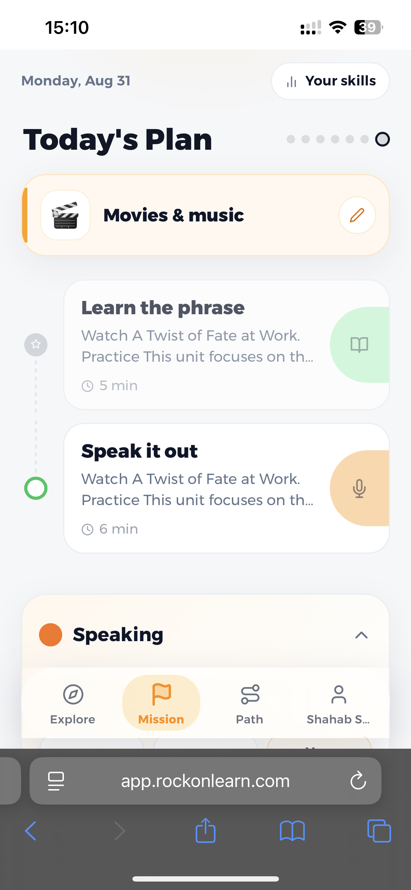
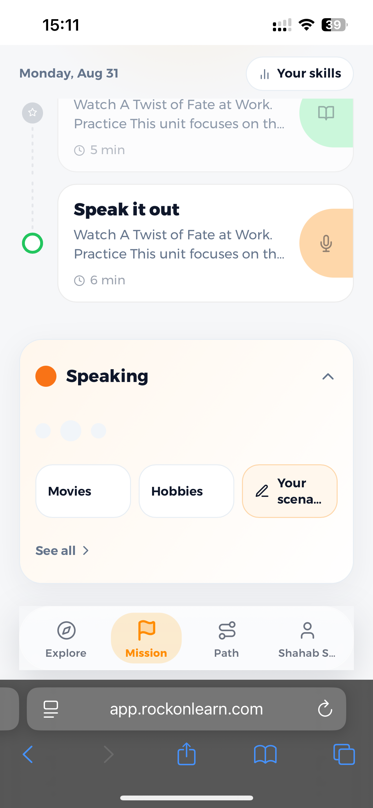
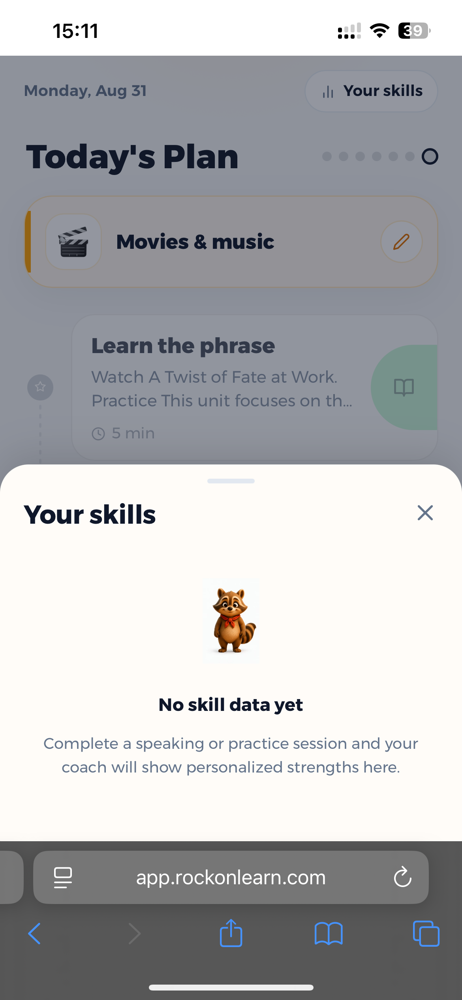
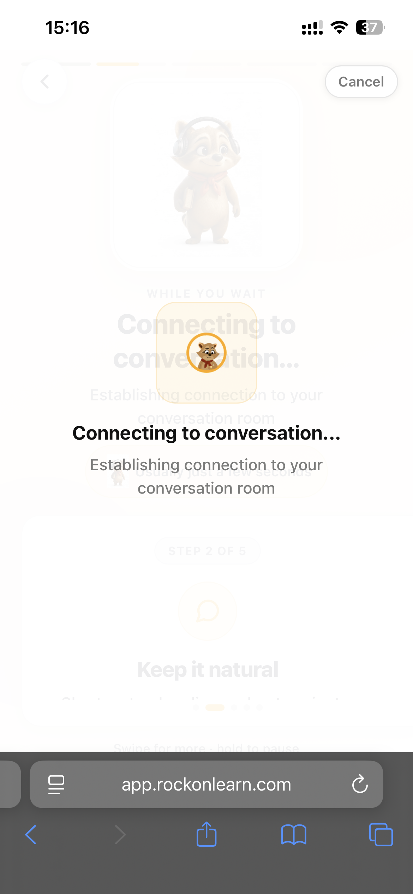
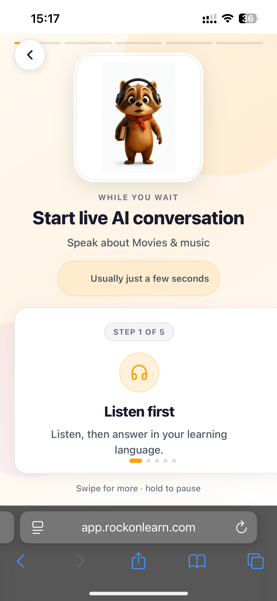
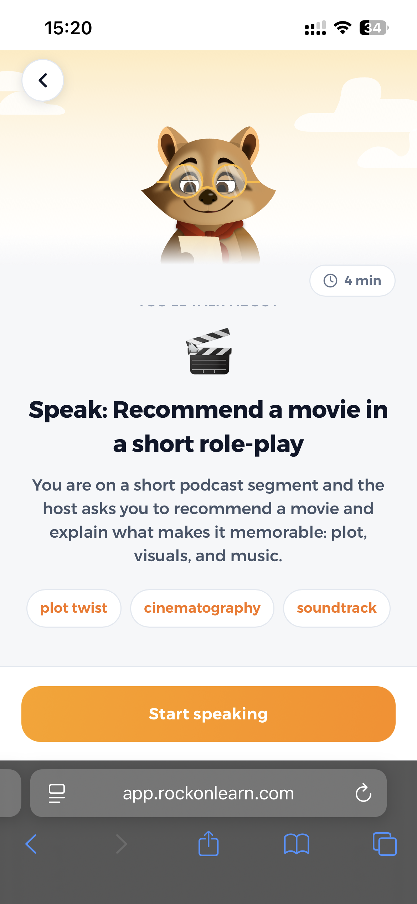
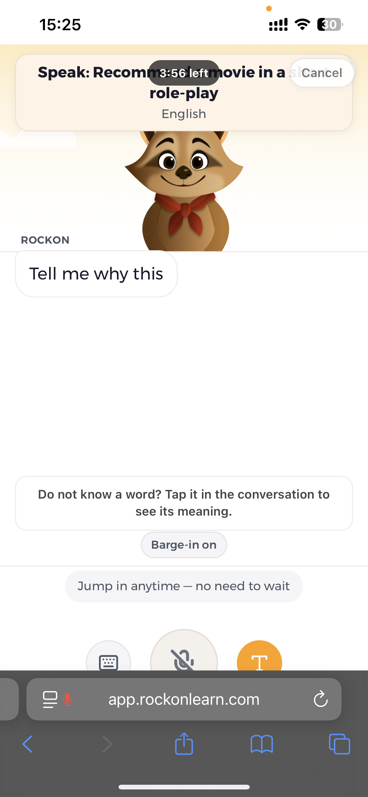
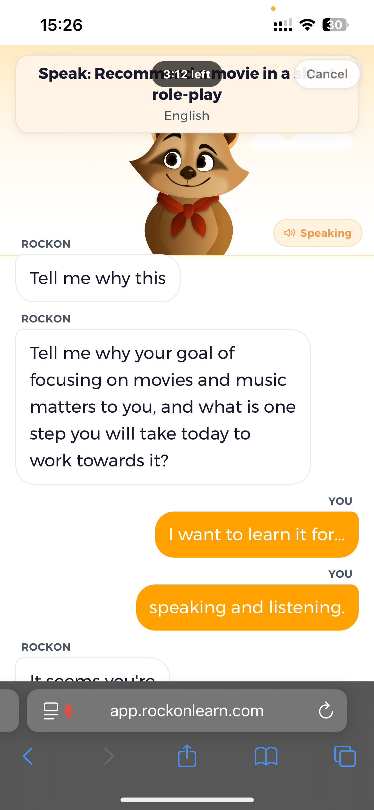

1

"Today's Plan" shows the Movies & music mission with two steps: Learn the phrase, Speak it out.
→
2

User scrolls down to see Speaking mission topic options: Movies, Hobbies, or a custom "Your scenario."
→
3

"Your skills" bottom sheet opens, showing "No skill data yet" since no sessions are completed.
→
4

Loading screen "Connecting to conversation..." while the live AI speaking session is set up.
→
5

Pre-session screen "Start live AI conversation," Step 1 of 5, "Listen first" instructions.
→
6

Speaking task intro: "Recommend a movie in a short role-play," with topic tags and Start speaking button.
→
7

Live voice conversation with the Rockon mascot; AI prompts a question with a countdown timer running.
→
8

Conversation continues: Rockon asks a follow-up and the user replies via voice bubbles.